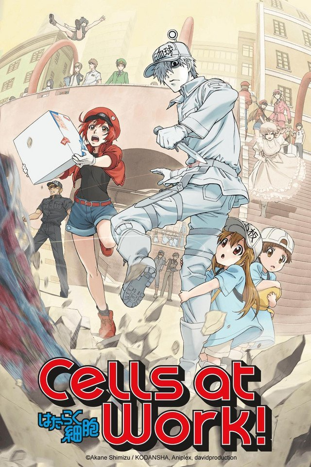
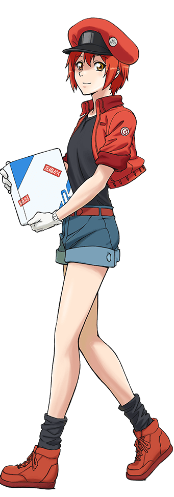
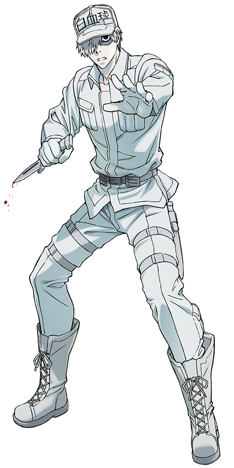

Click Here to watch the first episode
My Ratings:
Description:
In a human's body there are roughly 37.2 trillion anthropomorphic cells running their world. Everyday, they face the struggle of fighting against pathogens from invading, healing wonds, and much more. With red-blood cell and white-blood cell we will explore the world inside our bodies.
Click Here to watch the official trailerSeasons and Episodes:
| Season 1 | Episodes: 14 (Finished) |
| Season 2 | Episodes: 8 (Finished) |
(More Seasons Ongoing)
(Anime originated from Manga)
Main Characters:

Red Blood Cell
Our main character is a new red blood cell out of the trillions in our bodies. She learns to tranfer oxygen to parts of the body and carbon dioxide back to the lungs.

White Blood Cell
Our main white blood cell is a neutrophil that makes up more than half of all white blood cells in the body. They protects the body from outside bacterias and destroys them.